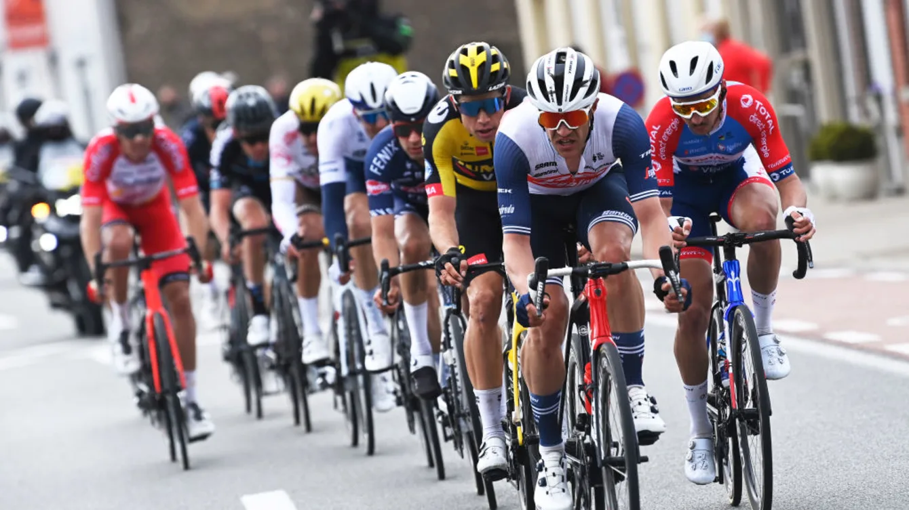

Активность
Моё хобби достаточно распространенное и обычное. Я занимаюсь велоспортом и могу сказать, что это моё хобби. Мне очень нравится как просто кататься на велосипеде, так и участвовать в различных велопробегах, походах на велосипеде. Велоспорт очень полезен для человека. Занимаясь этим спортом, вы значительно укрепите свой организм, свою дыхательную систему. Я на своём опыте могу сказать, что однажды влюбившись в этот спорт, ты уже посвящаешь ему все свое время. Велоспорт можно рассматривать не только как увлечение, но и профессиональный способ дохода. Советую вам заниматься велоспортом. Это очень здорово.
